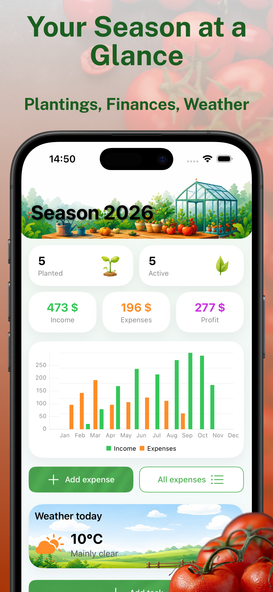
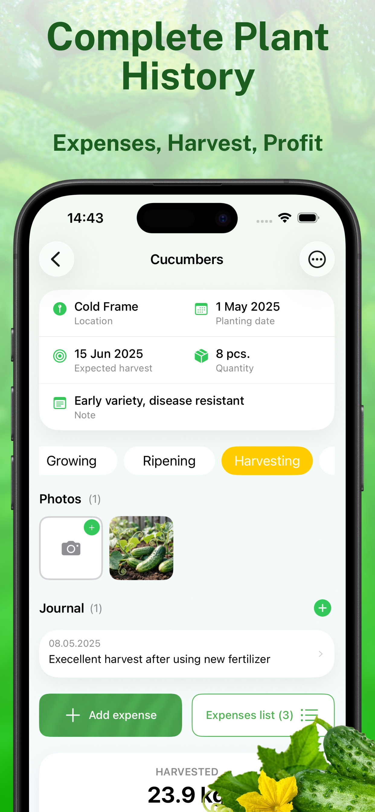
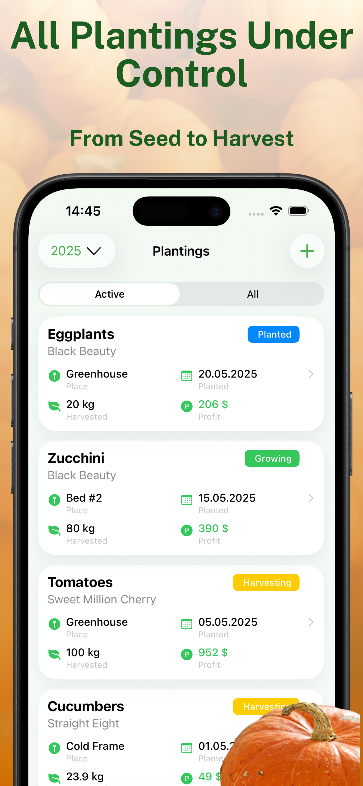

The Ultimate Toolkit for Home Gardeners



Plan from Seed to Harvest
Map Your Beds
Build custom square layouts matching your physical box grids.
Position Crops
Allocate vegetable varieties based on perfect spacing rules.
Log Care & Watering
Maintain consistent watering histories and growth stages logs.
Track Harvests
Record your organic yields, crop dates, and plant performance.
Engineered for High-Yield Gardening
Interactive Grid Planner
Ditch messy paper sketches. Design square foot maps where each block holds the exact correct capacity of carrots, tomatoes, or leafy greens.
Growth & Care Journals
Track planting dates, log sprouting timelines, set routine irrigation habits, and keep custom records of fertilizers or soil status variations.
Yield Optimization Logs
Analyze which sections of your backyard or green raising boxes performed best to optimize next year's crop rotation layouts seamlessly.
Your Garden Data Stays Local. Secure. Private.
CropKeeper respects your privacy. Your homestead layouts, personal soil logs, and backyard maps are handled strictly on your own device.
Loved by Urban Growers
"The square-foot visual organizer is beautiful and lightning-fast. It completely changed how I organize my 4x4 backyard raised boxes this spring."
"No subscriptions, no cloud account sync required, and works flawlessly when I have zero coverage out in the greenhouse field."
Frequently Asked Questions
What is the Square Foot Gardening methodology?
It is an intensive planting system where growing space is divided into a 1x1 foot grid. Each square accommodates a specific count of plants (e.g., 1 tomato, 4 lettuces, or 16 carrots) to boost vegetable outputs while conserving water and soil spaces.
Can I manage multiple separate raised beds in the app?
Yes. You can configure multiple layout matrices with custom dimension scales to represent your entire home garden plot map accurately.
Does the layout builder need cellular data to work?
No. CropKeeper operates fully offline. Your garden logs, sowing histories, and scheduler items remain fully usable anywhere on your property.
Ready to Build Your Smart Garden Layout?
Download CropKeeper for iOS and organize your high-yield raised beds today.